SINTA Life Sciences
SINTA and Google Scholar profiles of life-science lecturers at UGM, UI, ITB, IPB and UB, plus the UGM Faculty of Biology. · Source on GitHub
Coverage

| set | lecturers | with Google Scholar | publications | co-authors listed |
|---|---|---|---|---|
| UGM | 84 | 79 | 4,998 | 410 |
| UI | 39 | 27 | 1,939 | 97 |
| ITB | 88 | 88 | 5,732 | 381 |
| IPB | 116 | 97 | 12,485 | 770 |
| UB | 22 | 16 | 2,300 | 23 |
| UGM_BIO | 69 | 69 | 4,920 | 491 |
Pipeline


Five universities (k = 6)


UGM Faculty of Biology (k = 12)